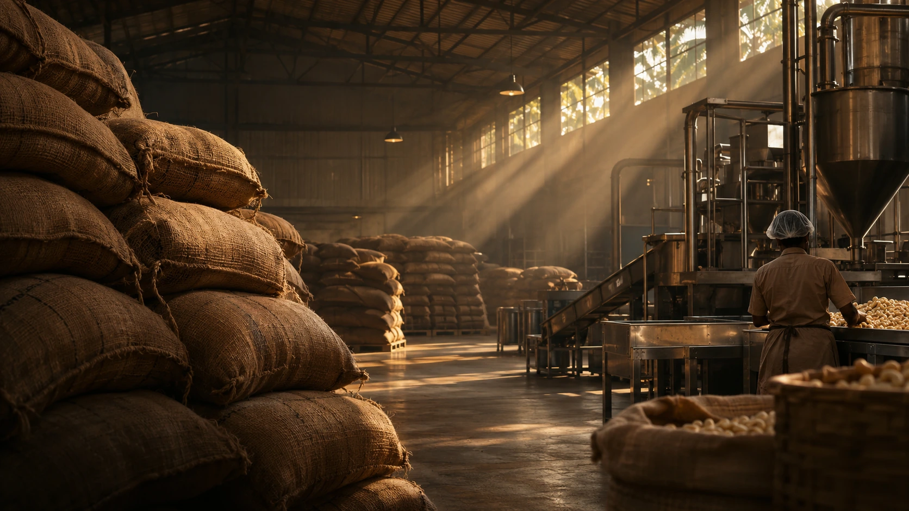
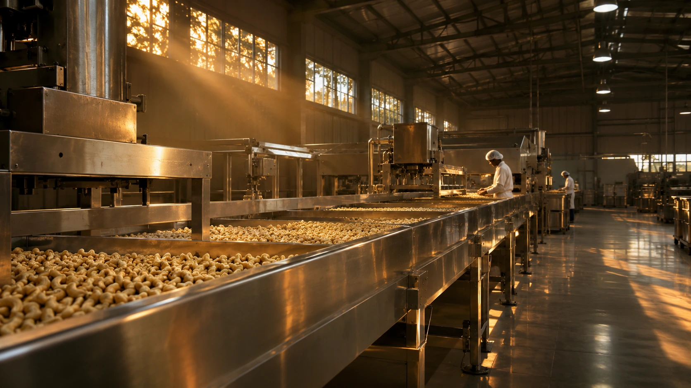
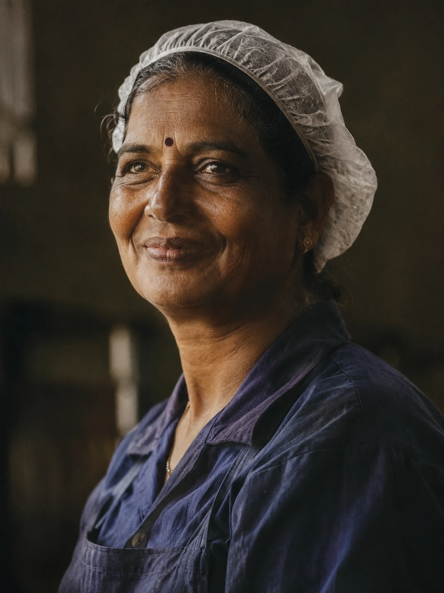
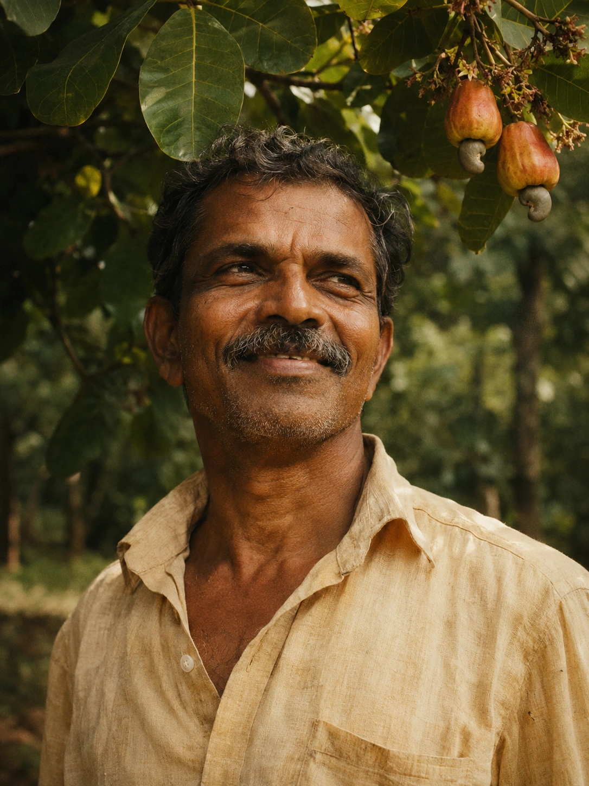
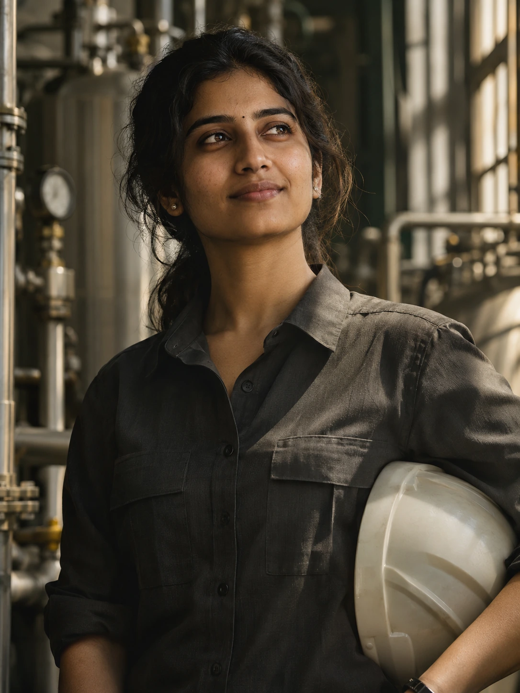

Our
expertise
ExploreExperience and modern processing facilities come together to serve domestic and international markets with care.


SKP began in Udupi with a simple belief: good things grow through care. Today, our family of businesses looks to the world, while staying true to the values that made us.

FOUNDER’S CORNER / THE PERSON BEHIND THE PURPOSE
MANAGING DIRECTOR, SKP GROUP
From rural Udupi to a global cashew enterprise. A self-made journey shaped by conviction, resilience and an unwavering commitment to quality.
Meet our MDTHE FILM / NEWS NEXT · YASHOGATHE
A JOURNEY OF CONVICTION
Managing Director, SKP Group
Sampath Shetty · Yashogathe, by News Next. Streamed in this page using the official embedded player.
It begins in the land, finds its character through careful processing, and reaches the world through relationships built on trust. A journey shaped by care, from start to finish.
The cashew journey


Behind every product, every possibility and every new beginning, there are people. Their knowledge, care and shared ambition give our story its character.
The human sideOur roots are in the land. Our strength is in our people. From cashew processing to new ventures, we bring local knowledge and a wider vision together. Across different industries, excellence, quality and trust remain the values that connect us.
Discover SKP
From fine cashews to new possibilities.
Find the right connection for your business.